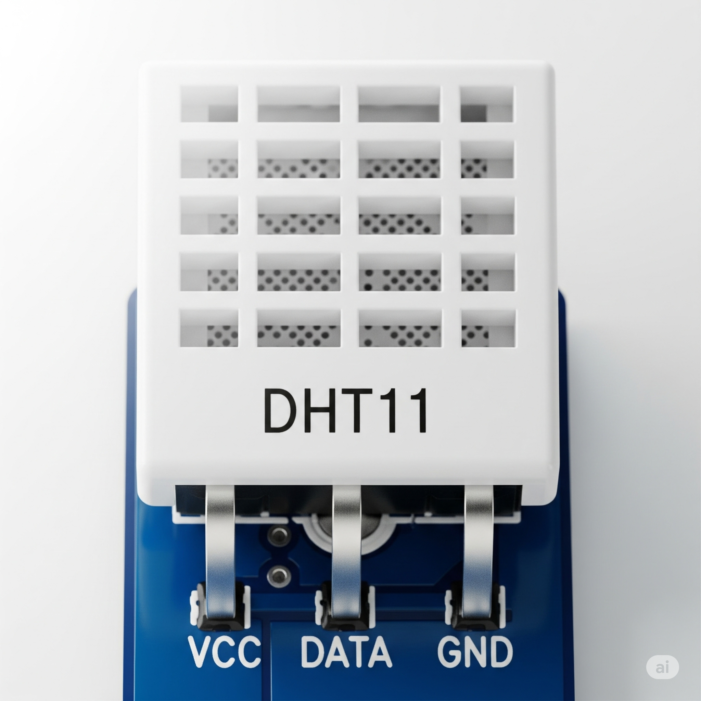
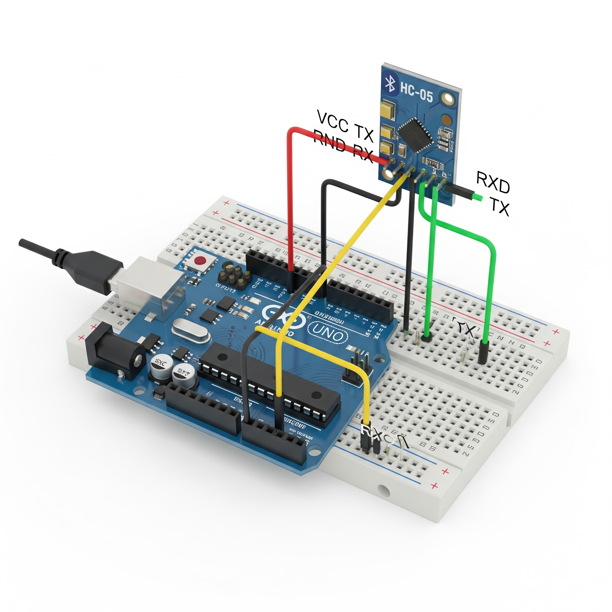

Sensores y Actuadores Avanzados
Lección 1: El Superpoder de las Librerías
Ya vimos las librerías con la pantalla LCD, pero su importancia es aún mayor con sensores y actuadores complejos. Estos componentes a menudo tienen su propio "idioma" (protocolo de comunicación). Una librería actúa como un **traductor universal**.
Sin una librería, tendrías que leer la hoja de datos del fabricante y escribir un código muy complejo solo para obtener un dato. Con la librería, simplemente usas un comando como `sensor.leerTemperatura()` y ¡listo!
Lección 2: Sensor de Temperatura y Humedad (DHT11)
Este popular sensor puede medir tanto la temperatura ambiente como la humedad relativa. Es un componente digital que envía la información a través de un solo cable, pero necesita la librería DHT.h para que Arduino pueda entender los datos.
Sensor DHT11
Circuito de Conexión
| Pin Componente | Pin Arduino UNO | Función | Librería |
|---|---|---|---|
| VCC (+) | 5V | Alimentación Positiva | DHT.h |
| DATA | Pin Digital 2 | Envía los datos de temperatura y humedad | |
| GND (-) | GND | Tierra (0V) |
Lección 3: Sensor de Distancia por Ultrasonido (HC-SR04)
Este sensor funciona como un murciélago: emite un pulso de sonido ultrasónico y mide el tiempo que tarda en regresar el eco. Con ese tiempo, podemos calcular la distancia. Requiere dos pines: `Trig` (disparo) y `Echo` (eco). Librerías como NewPing.h simplifican enormemente el cálculo.
Sensor HC-SR04

Circuito de Conexión
| Pin Componente | Pin Arduino UNO | Función | Librería |
|---|---|---|---|
| VCC | 5V | Alimentación Positiva | NewPing.h (Recomendada) |
| Trig | Pin Digital 9 | Envía el pulso de sonido (Disparo) | |
| Echo | Pin Digital 10 | Recibe el rebote del sonido (Eco) | |
| GND | GND | Tierra (0V) |
Lección 4: Servomotores
Un **servomotor** es un actuador que puede moverse a una posición angular específica (0°, 90°, 180°). Son increíblemente útiles para brazos robóticos o cualquier cosa que requiera un movimiento preciso. La librería Servo.h, que ya viene incluida con el IDE de Arduino, hace que controlarlos sea muy fácil.
Servomotor SG90
Circuito de Conexión

| Cable Servo | Pin Arduino UNO | Función | Librería |
|---|---|---|---|
| Rojo | 5V | Alimentación Positiva | Servo.h (Incluida) |
| Naranja/Amarillo | Pin Digital 9 (PWM) | Señal de control de posición | |
| Marrón/Negro | GND | Tierra (0V) |
Lección 5: Control de Motores DC (Driver L298N)
Cuando quieres controlar la **velocidad y dirección** de un motor DC, un simple transistor no es suficiente. Necesitas un **Driver de Motores** como el L298N. Este "ayudante" avanzado puede manejar dos motores de forma independiente y requiere una fuente de alimentación externa para los motores. Librerías como AFMotor.h facilitan su control.
Módulo L298N

Circuito de Conexión
| Pin Driver | Pin Arduino UNO | Función | Librería |
|---|---|---|---|
| ENA | Pin 5 (PWM) | Controla Velocidad Motor A | AFMotor.h (Recomendada) |
| IN1 | Pin 7 | Controla Dirección Motor A | |
| IN2 | Pin 8 | Controla Dirección Motor A | |
| ... (y pines para Motor B) | ... | ... |
Lección 6: Receptores Infrarrojos (IR)
¿Quieres controlar tu proyecto con un control remoto de TV? ¡Necesitas un receptor IR! Este pequeño sensor detecta las señales infrarrojas que emiten los controles remotos. Cada botón del control envía un código único. Con la librería IRremote.h, tu Arduino puede decodificar estos códigos y saber qué botón has presionado.
Sensor Receptor IR
Circuito de Conexión
| Pin Componente | Pin Arduino UNO | Función | Librería |
|---|---|---|---|
| VCC/5V | 5V | Alimentación Positiva | IRremote.h |
| OUT/Signal | Pin Digital 11 | Envía el código del botón presionado | |
| GND | GND | Tierra (0V) |
Lección 7: Comunicación Inalámbrica (Bluetooth HC-05/HC-06)
Para controlar tu Arduino desde un smartphone o una computadora sin cables, necesitas un módulo Bluetooth. Los modelos HC-05 y HC-06 son muy populares. Funcionan creando un "puente" inalámbrico que simula un cable serie. Puedes enviar y recibir datos (como letras o números) desde una app en tu teléfono para controlar LEDs, motores y mucho más. No siempre requieren una librería externa, ya que se puede usar SoftwareSerial.h, que viene con Arduino.
Módulo Bluetooth HC-05

Circuito de Conexión
| Pin Componente | Pin Arduino UNO | Función | Librería |
|---|---|---|---|
| VCC | 5V | Alimentación Positiva | SoftwareSerial.h (Incluida) |
| GND | GND | Tierra (0V) | |
| TXD | Pin 10 (RX) | Transmite datos (se cruza con RX) | |
| RXD | Pin 11 (TX) | Recibe datos (se cruza con TX) |
¡Proyecto Final!
Es hora de combinar todo. Construye un proyecto final que integre múltiples sensores y actuadores de los que hemos visto.
Ir al Proyecto FinalExamen Final
¿Estás listo para demostrar todo lo que has aprendido en el curso? ¡Completa el quiz final!
Iniciar Quiz Final